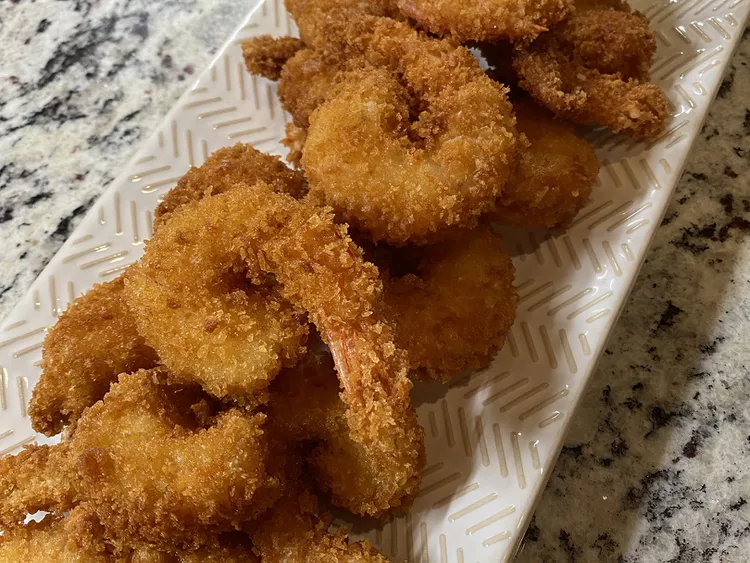

Fried Shrimp

Description
This recipe will show you how to make fried shrimp in 5 easy steps, using the ingredients provided.
Ingredients
- 1/3 cup all-purpose flour
- 3/4 teaspoon salt
- 1/2 teaspoon ground black pepper
- 3 large eggs
- 1 1/2 cups Kikkoman Panko Bread Crumbs
- 1 pound uncooked jumbo shrimp, peeled and deveined, tails left intact
- 1 cup vegetable oil
Steps
- Mix flour, salt, and pepper in a bowl. Beat eggs in a second bowl until frothy. Place bread crumbs into a third bowl.
- Dredge shrimp in the flour mixture, then shake off excess. Dip shrimp into beaten eggs, then press shrimp into bread crumbs,
turning to coat both sides.
- Heat 2 inches of oil in a large pot to 350 degrees.
- Deep-fry shrimp in batches in the oil until cooked;about 1 minute. Use tongs to transfer shrimp to a paper towel-lined plate to drain.
Repeat to cook remaining shrimp.
- Arange shrimp on platter to serve.